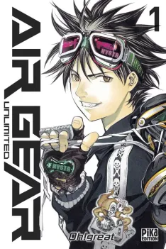
En cours de lecture
Synopsis
Pour s'affranchir des lois de la pesanteur et transformer la
ville en
immense terrain de
jeu, un nouveau sport a fait son apparition : l'Air Treck. Des rollers d'un genre nouveau sont nés.
Ils
intègrent un moteur de petite taille extrêmement puissant. Ikki n'a que faire de cette discipline,
jusqu'au
jour où les Skull Saders, des adeptes d'Air Treck s'en mêlent. Pour les vaincre, il devra maîtriser
ce
sport. Heureusement, ses quatre sœurs sauront être des alliées aussi inattendues que puissantes...
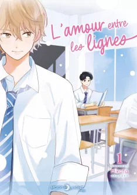
Lu
Lu
Synopsis
Hasegawa, un lycéen plutôt timide et introverti, vit une vie
plutôt
tranquille jusqu'au jour où Hiyama, l'extraverti de la classe, lui fait une déclaration d'amour.
Hasegawa
accepte ses sentiments, mais pour faciliter la relation, ils décident de se faire passer un journal
où
chacun écrit des mots à l'autre...
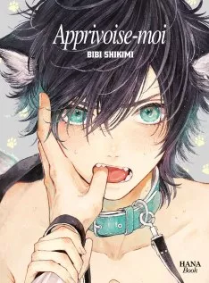
Lu
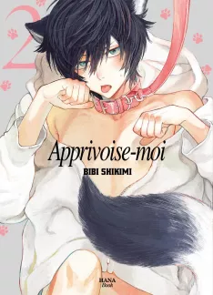
Lu
Synopsis
Iruma est un loup-garou. Il a été recueilli par Minato, un
vétérinaire,
après qu'il ait eu
un accident sous sa forme de loup. Iruma déteste que Minato le traite comme un chien et le lui fait
savoir,
mais en même temps, il obéit malgré lui au ordres du vétérinaire. Ayant trouvé un nouveau foyer,
Iruma
oscille entre soumission et rébellion.
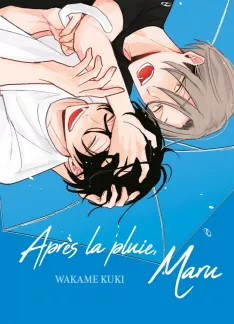
Lu
Synopsis
Un jour de forte pluie en rentrant chez lui par le parc, Kota
tombe
sur Maru, un homme solitaire en manque d'amour. Trempé et saoul, ce dernier le prend pour quelqu'un
d'autre et crie en pleurant de ne pas l'abandonner... Ne pouvant le laisser, Kota décide de le
ramener
chez lui.
À peine rentrés, Maru lui saute dessus... Offrir son corps à son partenaire est la seule façon qu'il
a
de montrer son amour pour ne pas qu'on le quitte.
Le lendemain matin au petit-déjeuner, Maru fond en larmes parce qu'il n'a aucun endroit où aller.
Kota
se rappelle alors sa propre solitude et lui propose de rester vivre chez lui quelque temps...
La rencontre inattendue de deux âmes solitaires qui vont devoir affronter leur passé !
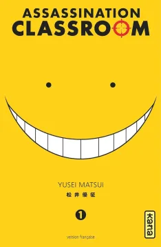
Lu
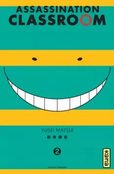
Lu
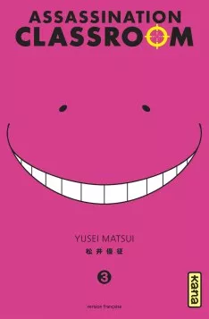
Lu
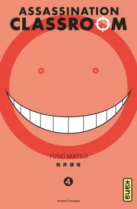
Lu
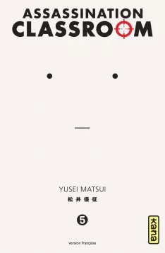
Lu
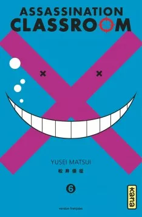
Lu
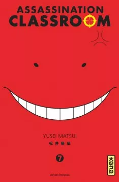
Lu
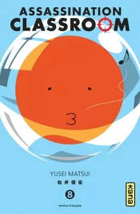
Lu
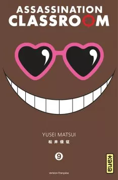
Lu
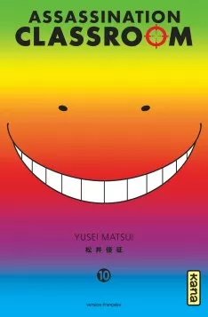
Lu
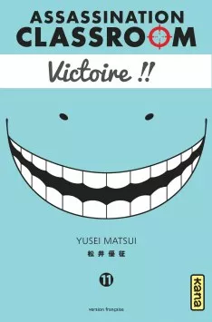
Lu
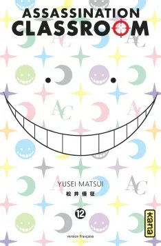
Lu
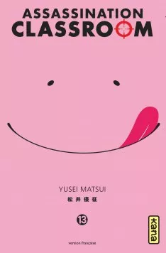
Lu
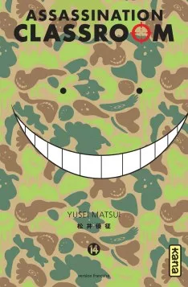
Lu
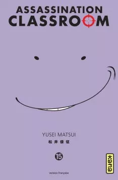
Lu
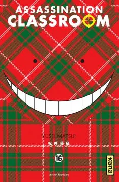
Lu
Lu
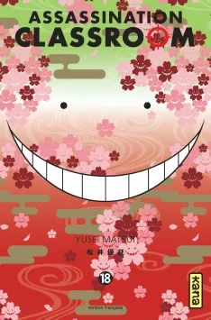
Lu
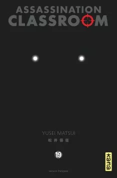
Lu
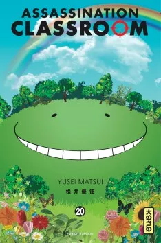
Lu
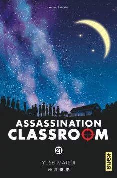
Lu
Synopsis
Une salle de cours, un professeur, des élèves... et des coups de
feu !
Les élèves de la classe 3-E du collège de Kunugigaoka sont des assassins en herbe, et leur
professeur
est leur cible à abattre !
Découvrez le quotidien insolite d'un drôle de professeur et de ses élèves !!!
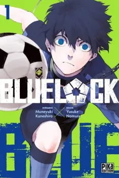
À Lire
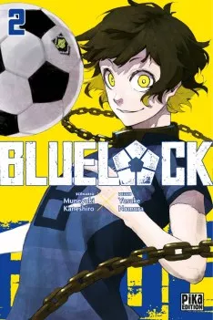
À Lire
Synopsis
Coupe du monde 2018, l'équipe de football du Japon est éliminée en
huitièmes de finale... Ce nouvel échec incite l'Union japonaise de football à fonder le "Blue Lock"
: un
centre de formation révolutionnaire rassemblant les 300 meilleurs attaquants lycéens du pays.
L'objectif du coach du Blue Lock, Jinpachi Ego, est clair : détecter l'unique attaquant qui écrasera
tous ses rivaux par son talent et son hyper-individualisme ! Pour Yoichi Isagi, joueur bouillonnant
encore inconnu, il n'y a pas d'alternative... S'il veut survivre au programme hautement sélectif qui
l'attend, il devra abandonner le jeu collectif et se transcender pour devenir l'attaquant ultime !
Lu
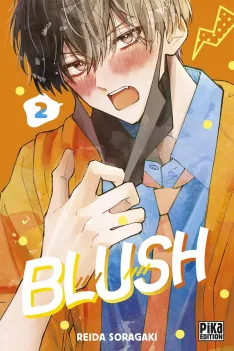
En cours de lecture
Synopsis
Momoka Kirino est une otaku invétérée qui préfère de loin
fantasmer
sur les beaux gosses de ses anime, plutôt que de tomber amoureuse dans la "vraie vie".
Et ce qu'elle affectionne tout particulièrement, ce sont les "tsundere" : ces persos au caractère
rude
en apparence qui cachent en réalité une tendresse intérieure !
Aussi la jeune fille est-elle très intriguée lorsque Kametani, un nouvel élève tout plein
d'agressivité,
débarque dans sa classe en criant haut et fort qu'il ne cause pas aux filles et que celles-ci
feraient
mieux de ne pas lui causer !
Par hasard, Kirino va découvrir que ce garçon, presque toujours encapuchonné et au visage trop
souvent
dissimulé derrière un masque, cherche à cacher à tout prix que parler à la gent féminine le fait
terriblement rougir...
Kirino vient de trouver son idéal masculin d'anime en Kametani... et elle ne va pas le lâcher !
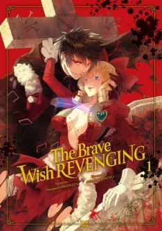
Lu
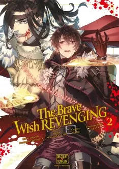
Lu
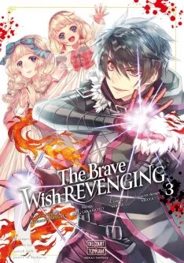
Lu
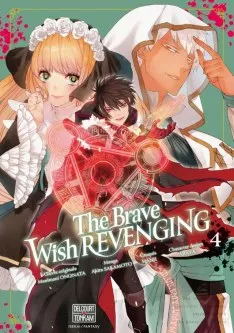
Lu
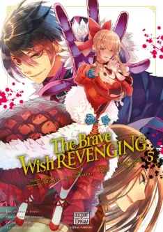
Lu
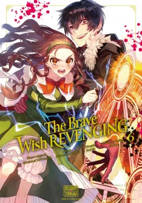
Lu
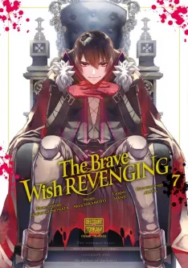
Lu
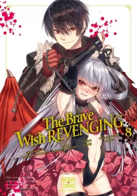
Lu
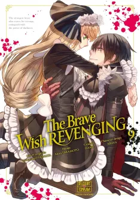
À Lire
Synopsis
Après avoir vaincu le roi des démons, Raoul aurait normalement dû
devenir le sauveur du monde et être acclamé comme le plus grand des héros... mais les choses se son
passées autrement. La princesse et quelques aristocrates, avides de pouvoir, ont fait massacrer sa
famille et ses camarades et l'ont fait accuser du crime. Juste avant de mourir, il plonge du côté
obscur
et jure de se venger.
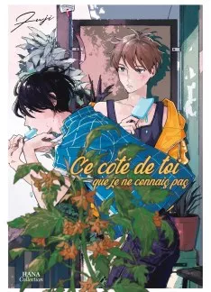
Lu
Synopsis
Aoba, étudiant à l'université, vit en colocation avec son ami
d'enfance
Shô, âgé d'un an de moins que lui. Mais Aoba n'arrive pas à oublier le visage de son ami pleurant
alors
qu'il rentrait à la maison, trempé de la tête aux pieds. Shô lui a toujours donné un surnom
affectueux,
le suit partout et a un corps qui fait réagir celui d'Aoba... Tout ceci ne peut pas être que de
simples
coïncidences ! Et si ces sentiments n'étaient pas ceux qu'ils croyaient être ?
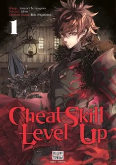
Lu
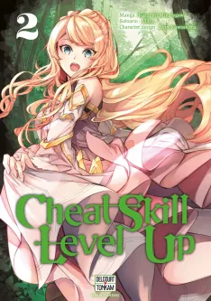
Lu
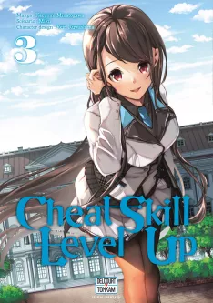
Lu
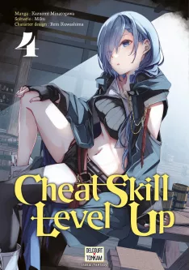
Lu
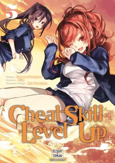
Lu
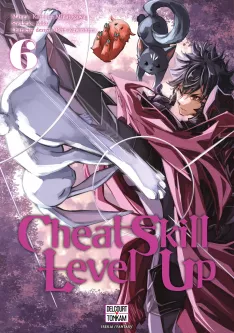
À Lire
Synopsis
En raison de son physique peu avantageux, Yûya Tenjô a toujours
été
victime de harcèlement scolaire. Il ne trouve de répit que dans les moments de solitude, dans la
maison
que son grand-père lui a léguée. Un jour, il tombe accidentellement sur une pièce secrète remplie
d'objets en tout genre, mais surtout... sur un mystérieux portail ! Derrière cette porte, c'est tout
un
monde de fantasy qui s'ouvre à lui !
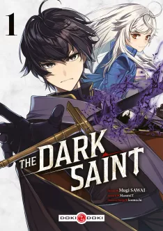
Lu
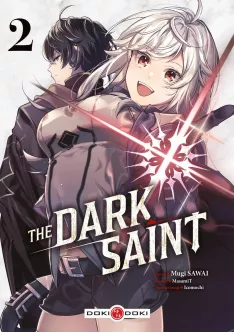
Lu
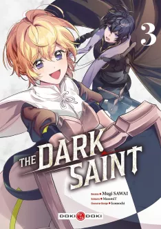
Lu
Synopsis
Faible, trahi et abandonné par son groupe, le guérisseur
trouvera-t-il
son salut dans la magie noire ?
Depuis tout jeune, Russell s'entraîne dur pour devenir un héros. Mais la déesse l'a finalement nommé
Saint, le rang le plus élevé dans la hiérarchie des guérisseurs. Dès la première aventure de son
équipe,
il est exclu par ses trois amis, qui s'estiment capables de prodiguer les mêmes soins. En rentrant
dépité dans son village, il rencontre la belle et mystérieuse Sybilla, qui lui dit : "Veux-tu la
force
?".
Alors qu'il est aux abois dans un nouveau donjon, Russell libère l'énergie illimitée qui sommeillait
en
lui, grâce au pacte qu'il a conclu avec Sybilla !
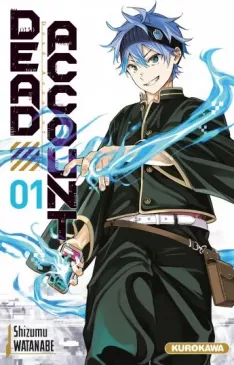
Lu
Synopsis
Les réseaux sociaux sont hantés, un influenceur va les exorciser !
Les fantômes hantent désormais les téléphones portables ! Qui sait, le vôtre l'est peut-être déjà...
Sôji Enishiro, 15 ans, est un streameur qui « flame » sous le surnom d'Aoringo. Provocateur et
bagarreur, il gagne beaucoup d'argent avec ses vidéos au contenu violent.
Toutefois, l'adolescent le plus détesté au monde est en réalité un grand frère dévoué à Akari, sa
petite
sœur, et un amateur de pâtisseries. Ses vidéos controversées ont pour but de couvrir les frais
hospitaliers exorbitants de sa cadette malade. Tant qu'elle se porte bien, Sôji est heureux, même
s'il
est rejeté des autres. Mais un jour, la tragédie frappe Akari et bouleverse à jamais le destin du
jeune
homme.
Exorcisez les fantômes digitaux !
Une école, des médiums et des fantômes d'un genre nouveau... Que le combat commence !
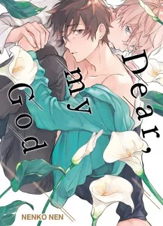
Lu
Synopsis
Nao, un bêta tout ce qu'il y a de plus normal, retrouve un jour son
ami
d'enfance Nagi, un alpha, qu'il n'avait pas revu depuis que celui-ci a déménagé. Nagi, un beau
garçon
aux allures de prince, n'a jamais oublié son ami, et revient en ville pour tenir une promesse faite
lorsqu'ils étaient petits. Or, Nao, lui, ne se souvient pas de Nagi... La situation se complique
encore
lorsque l'alpha remarque que son ami dégage une odeur d'oméga, alors que c'est un bêta !
Entre Nagi, amoureux de Nao mais méfiant envers les omégas, et Nao, inconscient du changement qui
s'opère dans son propre corps, sera-t-il possible de trouver un terrain d'entente ?
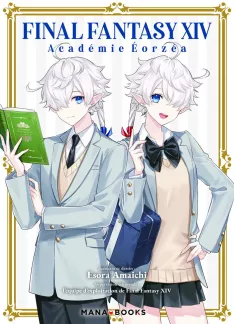
À Lire
Synopsis
Alisaie est une lycéenne qui fréquente l'Académie d'Éorzéa, une
institution exclusive créée par la fusion d'anciennes écoles rivales, l'Académie de la Lumière et
l'Académie des Ténèbres. Cependant, de fréquentes querelles entre les étudiants prouvent qu'un
profond fossé subsiste entre la Classe de la Lumière et la Classe des Ténèbres. Inquiète du conflit
en cours, la directrice Tataru décide qu'il est temps d'adopter des solutions audacieuses pour
remonter le moral. Que les jeux scolaires commencent !
Lu
Lu
Lu
Lu
Lu
Synopsis Angleterre, XIXe siècle. Rwanda est un jeune garçon né dans un monde déchiré entre l'ordre et le chaos, la richesse et la misère. Libéré de l'emprise de sa mère, il sort des ténèbres, les mains couvertes du sang de nombreux innocents. Quel avenir la vie réserve-t-elle à un orphelin qui ne connaît que la mort et la souffrance ? Qui ne connaît que la solitude et la noirceur ?
Lu
Lu
Lu
Lu
Lu
Lu
Lu
Lu
Synopsis
Ritsuka Uenoyama, un lycéen un peu flemmard qui a perdu goût en ce
qu'il aimait faire, fait la rencontre d'un autre élève du nom de Mafuyu Sato. Ce dernier possède une
guitare dont les cordes sont distendues. Pour tenter de le chasser de son endroit pour dormir,
Ritsuka lui dit qu'il peut réparer sa guitare. Mais en la testant, Mafuyu est émerveillé et souhaite
qu'il lui apprenne à jouer ! Sans grande conviction, Ritsuka lui présente le groupe avec lequel il
joue. Cependant, lorsqu'il entend chanter Mafuyu pour la première fois, Ritsuka souhaite qu'il
rejoigne son groupe...
Lu
En cours de lecture
Synopsis
Naïm, un jeune immigré marocain, perd de vue son frère lors de son
arrivée en Espagne. Une filiale de la mafia l'utilise pour acheminer une cargaison illicite en
France, où il va passer un test de sélection pour le célèbre club de football de la ville de Charmy.
Lu
Lu
En cours de lecture
Synopsis
L'histoire se déroule au XIe siècle, au Japon.
Gabimaru, « Le Vide », le plus célèbre et puissant des ninjas-assassins a été capturé et croupit en
prison. Affirmant n'avoir plus aucune raison de vivre, il attend désespérément qu'un bourreau
parvienne à lui ôter la vie car son entraînement surhumain lui permet de résister aux pires des
châtiments. C'est alors qu'il reçoit la visite d'un exécuteur pas comme les autres : une puissante
manieuse de sabre et trancheuse de tête. Cependant Gabimaru tiens plus à la vie que ce qu'il ne veut
le faire paraître. En échange de la vie sauve, elle lui propose un marché : il devra se rendre sur
une île mystérieuse afin de récupérer un élixir d'immortalité. Seul problème : les seuls qui sont
revenus de cette île sont arrivés en morceaux, couverts de mystérieuses fleurs...
À Lire
Synopsis
Grâce à ses capacités sportives, Kagiura a été accepté dans le
lycée de ses rêves. Mais pour assister aux entrainements de basket, l'adolescent a décidé d'intégrer
l'internat de l'établissement. Le jour de son arrivé, il découvre son colocataire de chambre :
Hirano, son aîné, semble d'abord un peu distant. Mais au fil des semaines qui passent, les deux
garçons pourraient bien se rapprocher...
Lu
Lu
Lu
Lu
Lu
Lu
Lu
Lu
Lu
Lu
Synopsis
Kakeru et Yamato sont deux amis d'enfance que tout oppose,
pourtant
ils adorent passer leur temps ensemble. Yamato est beau, grand et studieux, tandis que Kakeru est
naïf,
et plutôt mauvais en classe. Étonné que son ami n'ait pas déjà une petite amie, Kakeru lui demande
un
jour s'il est amoureux de quelqu'un. Yamato hésite un moment avant de prononcer son prénom...
En cours de lecture
Synopsis
Quand les membres de la famille Ariane découvrent un bébé aux
cheveux
blonds abandonné dans leur étable, ils ne s'attendent pas à élever un véritable petit génie ! À
l'âge de
douze ans, le jeune Shirone découvre la magie dans un livre et rêve de devenir un grand mage.
Cependant,
au royaume de Thormia, il est hors de question de laisser un simple roturier apprendre cette noble
discipline ! La détermination de Shirone suffira-t-elle pour accomplir son rêve dans ce monde
impitoyable?
Lu
Synopsis
Ino, un homme au visage peu expressif vit avec Taïchirô, un
collègue
plus jeune que lui, avec qui il entretient une sorte de relation d'un maître avec son chien. Leur
cohabitation a débuté lorsqu'après une soirée de leur boîte, Ino a hébergé Taïchirô qui n'avait
nulle
part où aller. Taïchirô, bien qu'il déclare son amour à tout bout de champ et saisisse chaque
occasion
pour toucher son colocataire, ne cherche jamais à aller plus loin. Le jour où Ino décide de céder à
Taïchirô pour récompenser sa retenue, il « tombe » dans une flaque d'eau et atterrit dans un monde
parallèle où vit un autre Taïchirô qui ne l'a jamais rencontré et se comporte très froidement à son
égard.
Lu
Lu
Lu
Lu
Lu
À Lire
Synopsis
Victimes d'un complot, et si leur seul espoir était entre les mains
d'un assassin ?
Appelé avec ses camarades de classe dans un autre monde, Akira Oda se voit attribuer les
caractéristiques d'un banal assassin du fait de sa discrétion. Mais ses compétences vont se révéler
bien
plus grandes que celles d'un héros.
Très vite, Akira commence à avoir des doutes sur le roi qui les a fait venir dans cet autre monde et
il
va devoir mettre en pratique ses compétences d'assassin pour élucider le mystère... et découvrir la
conspiration qui est en train de se tramer !
Lu
Synopsis
Kurokawa, un lycéen ordinaire qui habite à Hiroshima, est
secrètement
fasciné par un camarade de classe qui sourit sans cesse, Shiraki. Un jour, alors qu'il rentre chez
lui,
il croise Shiraki en pleine fuite, uniquement vêtu d'une chemise tachée de sang ; pris par surprise,
il
décide de l'aider. Shiraki lui avoue que sa famille l'oblige à vendre son corps pour gagner de
l'argent,
et qu'il s'est enfui car le client avec qui il était commençait à devenir violent. Bouleversé,
Kurokawa
prend la décision de fuguer avec lui.
Tous deux filent donc en direction de la mer et décident de laisser leurs problèmes derrière eux,
tout
en apprenant à mieux se connaître. Mais Kurokawa craint une chose : que la réalité ne les rattrape
très
vite...
Lu
Synopsis
Akira Minato, un homme d'affaires de 30 ans, décide, après avoir
quitté
son emploi, de reprendre une laverie automatique. Là, cherchant à échapper à son passé stressant et
à
mener une vie tranquille, il rencontre un jour dans sa laverie Shintaro Katsuki, un lycéen de 17
ans.
Une étonnante amitié naissante, marquée également par une différence d'âge enrichissante, se
développe
progressivement en quelque chose de plus profond. Dans cet écrin hors du monde et de ses jugements,
représenté par la laverie, ils naviguent ensemble dans les défis et les joies de la vie quotidienne.
Lu
Lu
Lu
Lu
En cours de lecture
À Lire
Synopsis
Shin, le meilleur joueur du VRMMORPG The New Gate, transformé en jeu mortel, a réussi à libérer tous
les
joueurs pris au piège en terrassant le boss de fin. Mais avant de se déconnecter, il est englouti
par
une lumière inconnue et perd connaissance... À son réveil, il se retrouve dans le monde de The New
Gate
!!
L'avènement du champion incontesté projeté 500 ans plus tard dans un jeu mortel !
Le rideau se lève sur une nouvelle légende sans pareil !!
Lu
Lu
Lu
Lu
Lu
Lu
Lu
Lu
Lu
Synopsis
Lors de la Troisième Guerre mondiale, la majorité de la surface
habitable
a disparu. Les
humains ayant survécu ont instauré le traité de Babylone, bannissant l'armement militaire. Shion est
un
jeune garçon de 12 ans au QI si élevé qu'il a été promu par l'État. Grâce à son intelligence, Shion
peut
ainsi vivre aisément avec sa mère à Chronos, le quartier luxueux de N°6, sixième région habitable
restante.
La nuit de son anniversaire, il rencontre un jeune garçon du même âge que lui blessé au bras, dont
il se
dépêche de prendre soin. Mais Shion apprend que le garçon est un criminel. Toutefois, pour il ne
sait
quelle
raison, Shion ne peut pas le dénoncer et décide de s'occuper de lui. Le fugitif lui apprend alors
qu'il
s'appelle Nezumi, ce qui signifie "rat", et que, contrairement aux dires du bureau de sécurité, il
ne
s'est
pas échappé lors de son transfert au camp correctionnel !
Lu
Lu
Lu
Synopsis
Fujinaga est étudiant en troisième année à la faculté, et il rêve
de
devenir
acteur. Mais il
enchaîne les échecs lors de ses auditions. Aussi, le jeune homme commence à perdre confiance en lui.
Jusqu'au jour où il rencontre Keito. Ce dernier, étudiant en première année est aussi un sourd
oraliste
et
signant, en section éducation de l'université. Au contact l'un de l'autre, ils vont beaucoup
apprendre...et
peut-être même développer des sentiments ?
Lu
Synopsis
Haruki travaille dans un host club et cache sa nature de SUB, mais
ne
pouvant réfréner son instinct de soumission, il décide d'installer une application pour DOM et SUB
afin
de trouver un partenaire d'un soir. Le dominant qu'il rencontre est un beau jeune homme gentil et
doux... Haruki assouvit ses désirs en jouant avec ce dernier pour une seule nuit.
La semaine suivante, ce dominant nommé Suguri apparaît au club d'Haruki en tant que nouvel hôte !
Alors
qu'il pensait ne plus jamais le revoir, Suguri lui demande soudainement de devenir son partenaire ?!
Une histoire dans l'univers DOM/SUB où l'instinct pousse à tous les rapprochements !
En cours de lecture
Synopsis
Rouge est un jeune garçon plein d'ambition et de fougue. Sa plus
grande
fierté est d'être considéré comme le meilleur Dresseur de Pokémon des environs de Bourg Palette ! Le
Professeur Chen va le convaincre de partir à la découverte de nouveaux Pokémon pour compléter
l'encyclopédie les répertoriant : le fameux Pokédex !
À Lire
Synopsis
Hiro s'est réincarné dans le corps du troisième prince d'un petit
pays
pauvre. Il souffre de voir son peuple mourir de faim à cause du manque de terres fertiles. Très
vite, il
apprend l'alchimie, une science universelle longtemps restée interdite. Puis, en combinant cette
science
avec ses connaissances du Japon moderne, le jeune prince obtient un nouveau pouvoir extraordinaire !
Hiro va alors utiliser son incroyable faculté pour reconstruire son pays au bord de la ruine... Mais
sa
quête sera semée d'embûches !
Découvrez un isekai dans un monde de fantasy où les connaissances modernes s'allient avec l'alchimie
pour transformer un petit pays précaire en une grande et puissante nation !
Lu
Synopsis
Naofumi Iwatani, 20 ans, est un étudiant passionné
d'héroïc-fantasy.
Un
jour, il tombe sur un livre narrant la légende de 4 chevaliers maniant chacun une arme différente :
épée,
lance, arc et bouclier. Mais au bout de quelques pages, il ne trouve plus que des pages vierges et
se
retrouve aspiré à l'intérieur du livre où il devient le "héros au bouclier". Méprisé de tous, y
compris
par
les autres héros, Nao va alors essayer de trouver sa place dans ce monde et de prouver sa valeur en
dépit
d'un handicap certain : il ne peut ni retirer son bouclier, ni utiliser aucune autre "arme".
Lu
Lu
Lu
Lu
Lu
Lu
Lu
Lu
Lu
À Lire
En cours de lecture
Synopsis
Miyano est un lycéen fan de mangas boy's love. Et surtout, il est
très
complexé par son visage aux traits efféminés. Mais un jour, alors qu'il assiste à une bagarre, un de
ses
aînés intervient pour éviter que la situation ne tourne au vinaigre. Ce dernier, prénommé Sasaki,
commence très vite à éprouver de l'affection pour son camarade. Cherchant à le comprendre et à le
connaître, il découvre l'intérêt que Miyano porte pour les mangas boy's love... Sans préjugé, il va
alors également commencer à essayer d'en lire. Et si c'était le début d'une belle histoire d'amour ?
En cours de lecture
Synopsis
Quatre ans après la terrible bataille de Sekigahara, Yuya Shiina
une
jeune chasseuse de primes est à la recherche du célèbre « Tueur aux mille victimes », le redoutable
Kyo
aux yeux de démons. La prime mise sur sa tête s'élève à un million de ryos, plus que ce que
n'importe
quel chasseur de primes peut rêver décrocher dans sa vie.
L'homme serait en possession d'une épée d'un mètre cinquante de long, porte dans son dos le symbole
de
Taijitu (Yin et Yang) et aurait des yeux aussi rouges que ceux d'un démon.
Lorsque Yuya croise le chemin de Kyôshirô Mibu, le jeune apothicaire arbore deux de ces
particularités.
Elle découvrira bien assez tôt que son flair était bon. Dans le corps de ce benêt facilement berné
par
la gente féminine sommeille le sabreur le plus redouté et le plus recherché de tout le Japon...
À Lire
Synopsis
Même dans le Japon moderne, les ninjas se cachent toujours dans
l'ombre. Le jeune ninja Yodaka a reçu sa nouvelle mission : protéger à tout prix Aoi, une lycéenne
un
peu particulière. Mais un jeune ninja introverti peut-il survivre au monde sauvage du lycée tout en
remplissant sa mission ?
Lu
Synopsis
Depuis la rentrée et le départ de ses aînées pour l'université,
Takezô
est devenu le seul membre du club de koto. Passionné par cet instrument, il refuse de laisser le
club
disparaître faute de nouvelles recrues. Mais sa salle est déjà envahie de délinquants, et aucun de
ses
camarades ne semble s'intéresser à une activité musicale aussi traditionnelle... jusqu'au jour où
Chika,
un élève à la mauvaise réputation, demande à s'inscrire.
À Lire
Synopsis
Hikaru et Yoshiki sont deux amis d'enfance qui ont grandi ensemble
dans
un hameau reculé. Mais un jour, les doutes qu'éprouvait Yoshiki depuis quelque temps se confirment :
depuis sa disparition en forêt, six mois plus tôt, Hikaru a été remplacé par... "autre chose".
Malgré
cet effroyable constat, Yoshiki refuse d'être séparé de son ami. Il fait alors le choix de
poursuivre
son quotidien aux côtés de cet "être" à l'image parfaite de Hikaru. Mais au même moment, d'étranges
incidents se produisent çà et là dans le village..s
Lu
Synopsis
« Pourquoi es-tu réapparu devant moi ? »
Un soir, Tsukasa se présente à Shunya en prétendant être Ryôsuke, son défunt ami d'enfance. Il s'avère
que ce dernier a possédé le garçon pour l'empêcher de se suicider. C'est alors que commence une étrange
cohabitation à trois. Tsukasa sert de lien entre Ryôsuke et Shunya en transmettant ses paroles ou en lui
prêtant son corps. Tous trois sont persuadés que cette vie durera toujours...
En cours de lecture
Synopsis
A Tokyo, de nos jours.
Plusieurs cadavres mutilés ont été retrouvés par la police qui recherche vainement un coupable. Quelques
spécialistes évoquent les goules, créatures monstrueuses qui chassent les humains pour les manger.
Kaneki Ken, jeune homme de 18 ans étudiant à l'université, ne se préoccupe pas plus que ça de ces
incidents, mais la réalité va le rattraper ! En effet, la jolie fille pour laquelle il a eu le coup de
foudre dans un café et avec qui il sort n'est autre que la goule qui sévit dans le quartier ! Celle-ci
tente de le dévorer et lui broie l'abdomen, mais elle est achevée par la chute de poutres en métal d'un
chantier avant d'avoir pu mettre son sinistre dessein à exécution. Tout pourrait être bien qui finit
bien, mais les médecins qui retrouvent Kaneki à moitié mort ne trouvent pas d'autre moyen pour le sauver
que de transplanter les organes du monstre dans son corps ! Après son opération, le jeune homme constate
avec horreur qu'il se transforme petit à petit en goule... La descente aux enfers de Kaneki commence !!
Lu
Lu
Lu
Synopsis
Depuis la nuit des temps, les hommes affrontent les Nihiles, les
anges
déchus qui infiltrent notre monde. XIXe siècle - Orphelin depuis l'attaque de ces créatures
malfaisantes, Levy devient le disciple du grand mage et inventeur Thomas Edison. Son objectif :
intégrer
Trisagion, l'agence d'exorcisme luttant contre les anges déchus. Parviendra-t-il à résister au
déchaînement des forces occultes qui menacent le monde ?
Lu
Lu
Lu
Lu
Synopsis
Les héros ne sont pas toujours là où on les attend...
Ao et Hiiro, deux frères jumeaux, se sont jurés de devenir des "héros", des êtres considérés comme
supérieurs. Quelques années plus tard, alors qu'Ao peut maîtriser le feu, Hiiro n'a aucun pouvoir et
doit malheureusement abandonner son rêve. Il s'engage comme nettoyeur pour réparer les dégâts causés
par
les combats en ville.
Mais les héros cachent un sombre secret et lorsque Hiiro trouve son amie d'enfance, Iruka,
traumatisée,
la vérité éclate. Le jeune garçon va tout faire pour protéger son amie, jusqu'à défier cette société
de
prétendus héros !
Cette section recense les extraits promotionnels gratuits du tome 1 présents dans ma collection. Ils sont gérés comme le reste de ma mangathèque et ne sont pas consultables depuis ce site.
À Lire
Synopsis
À 12 ans, Nico mesure déjà 1m85. Cette croissance trop rapide est
dangereuse pour sa santé et les médecins sont formels : il doit faire du sport ! Sa mère l'oblige à
tester tous les sports existants, mais rien n'y fait, Nico déteste ça et préfère jouer à la console
avec
son meilleur ami, Alex. Jusqu'au jour où Kia, une de ses camarades de classe, le force à participer
à un
match de volley-ball. Nico aurait-il enfin trouvé un sport fait pour lui ?
À Lire
Synopsis
Kakyu est un diable de rang inférieur ayant survécu en enfer
pendant
plus de 2 000 ans, durant lesquels il a développé une force phénoménale. Après s'être retrouvé au
milieu
d'une querelle entre Satan et Zeus, il a été propulsé dans un monde parallèle.
Désormais, il a trouvé sa place parmi les habitants du village de Jorn et mène une vie paisible en
tant
que marchand ambulant. Malheureusement, un jour où il est absent, le hameau est réduit en cendres.
Kakyu
trouve un seul survivant dans les décombres : Ars, un nouveau-né. Il décide alors de l'élever pour
faire
de lui la personne la plus heureuse du monde !
Avec un diable venu d'ailleurs et un bébé, une histoire d'éducation hors norme impliquant le monde
entier commence !
À Lire
Synopsis
Alors que des cadavres momifiés sont retrouvés un peu partout dans
le
pays, le jeune Seita utilise ses talents de medium pour aider son meilleur ami. Mais il est loin de
se
douter que, pour y parvenir, il devra y risquer plus que son être !
À Lire
Synopsis
Takuma Isurugi, un policier de l'ère Meiji, protège la vie des
citoyens.
Bien qu'il se dévoue à son devoir dans cette nouvelle époque, son cœur reste hanté par Mogami
Reijirô,
qu'il avait rencontré sur le champ de bataille à la fin du shogunat. Incapable d'oublier les
tumultes de
l'ancienne ère ni sa fascination pour les sabres, Takuma, poussé par ses retrouvailles avec Reijirô,
se
lance de nouveau dans des affrontements mortels, en tant que membre de la "brigade des sabres".
Une fresque épique ouvrant la voie à l'ère Meiji à coups de sabre !
À Lire
Synopsis
La quête dont tout aventurier rêve !
Notre histoire commence avec la jeune Théna, apprentie bretteuse et habitante de Little Island, une
île
bien trop étroite pour sa témérité et sa soif de découvrir le monde. Une envie irrésistible de se
rendre
sur le continent ne la quitte pas, et un mystérieux garçon errant qu'elle sauve in extremis du
danger
pourrait bien être son premier compagnon d'aventure ! Mais ils devront se méfier du cruel roi Mimas,
véritable menace pour tout espoir de liberté...
À Lire
Synopsis
Un sabre ne doit servir qu'à punir le mal et à protéger les
faibles...
Aspirant forgeron, Chihiro travaille chaque jour aux côtés de son père. De nature taciturne, il est
tout
l'opposé de son paternel, un homme qui a toujours le mot pour rire. Ils avaient tout pour vivre
heureux... jusqu'à cette terrible tragédie.
Désormais, leur belle relation est tachée de sang, et leur bonheur est à jamais perdu. Consumé par
la
haine, Chihiro est aujourd'hui animé par une détermination sans faille...
À Lire
Synopsis
Dans un royaume, une sorcière a assassiné le roi et a enlevé la
princesse Ignelia et l'emmène dans une tour appelée La tour du Dragon, qui s'apparente à une grande
structure qui est apparue d'un coup des cieux et ayant de nombreux monstres aux alentours. Pour la
sauver, la garde royale a tenté de prendre d'assaut la tour sans succès.
C'est à ce moment que débarque un fermier qui décide de s'aventurer dans le donjon pour la délivrer
des
griffes de la sorcière.
À Lire
Synopsis
Angleterre, XIe siècle
Luke, un jeune garçon élevé par des loups rencontre un jour un prêtre du nom de Crowley. Grâce à
l'amour
que lui porte le prêtre, Luke retrouve son humanité et passe des jours paisibles à ses côtés. Mais
un
jour, les vikings envahissent le village du jeune garçon... Voici l'histoire d'"Odin, le loup du
combat", l'homme qui sera craint par les vikings !